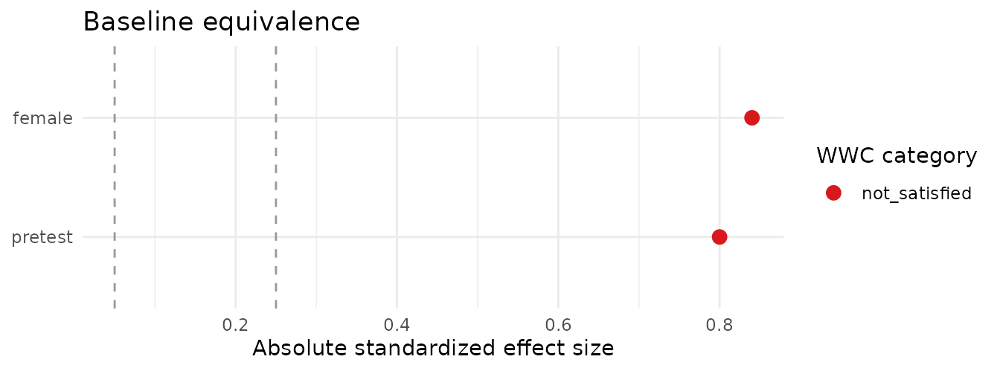

The problem
Every quasi-experimental impact study in education has to answer the same question before anyone looks at outcomes: were the treatment and comparison groups similar enough at baseline? The What Works Clearinghouse (WWC) sets the de facto standard for this in education research:
- a covariate with a standardized mean difference (Hedges’ g) of 0.05 or less satisfies baseline equivalence on its own;
- between 0.05 and 0.25, equivalence holds only if the covariate is statistically adjusted for in the impact model;
- above 0.25, the covariate cannot establish equivalence.
baselinr computes those effect sizes and categories so
the baseline table is not something you assemble by hand for every
report.
A worked example
study <- data.frame(
treat = c(1, 1, 1, 0, 0, 0),
pretest = c(5, 6, 7, 4, 5, 6), # continuous -> Hedges' g
female = c(1, 0, 1, 0, 0, 1) # binary -> Cox index
)
baseline_equivalence(study, treatment = "treat")
#> covariate type n_treatment n_comparison mean_treatment mean_comparison
#> 1 pretest continuous 3 3 6.0000000 5.0000000
#> 2 female binary 3 3 0.6666667 0.3333333
#> sd_treatment sd_comparison effect_size wwc_category
#> 1 1.0000000 1.0000000 0.8000000 not_satisfied
#> 2 0.5773503 0.5773503 0.8401784 not_satisfiedBy default, every numeric, logical, and factor column other than the
treatment indicator is treated as a covariate. A covariate with exactly
two unique values is treated as binary and summarized with the Cox
index; other numeric covariates use Hedges’ g. Pass
covariates = to control the set explicitly.
The building blocks
baseline_equivalence() is built from exported helpers
you can also call directly.
# Standardized mean difference (Hedges' g) for a continuous covariate
hedges_g(study$pretest, study$treat)
#> [1] 0.8
# Cox index for a binary covariate
cox_index(study$female, study$treat)
#> [1] 0.8401784
# Classify any effect size(s) into the WWC categories
wwc_classify(c(0.03, 0.12, 0.80))
#> [1] "satisfied" "satisfied_with_adjustment"
#> [3] "not_satisfied"Visualise and format
A Love plot shows the standardized effect size of each covariate against the WWC thresholds (0.05 and 0.25), coloured by category:
love_plot(baseline_equivalence(study, treatment = "treat"))
For a report-ready table, gt_baseline() returns a
formatted gt table:
gt_baseline(baseline_equivalence(study, treatment = "treat"))Scope
Continuous covariates use Hedges’ g (with the WWC small-sample
correction); binary covariates use the WWC Cox index. Collapse the table
into an overall verdict with wwc_summary(), assess sample
loss with attrition(), visualise with
love_plot(), and format with gt_baseline().
See NEWS.md for the roadmap.